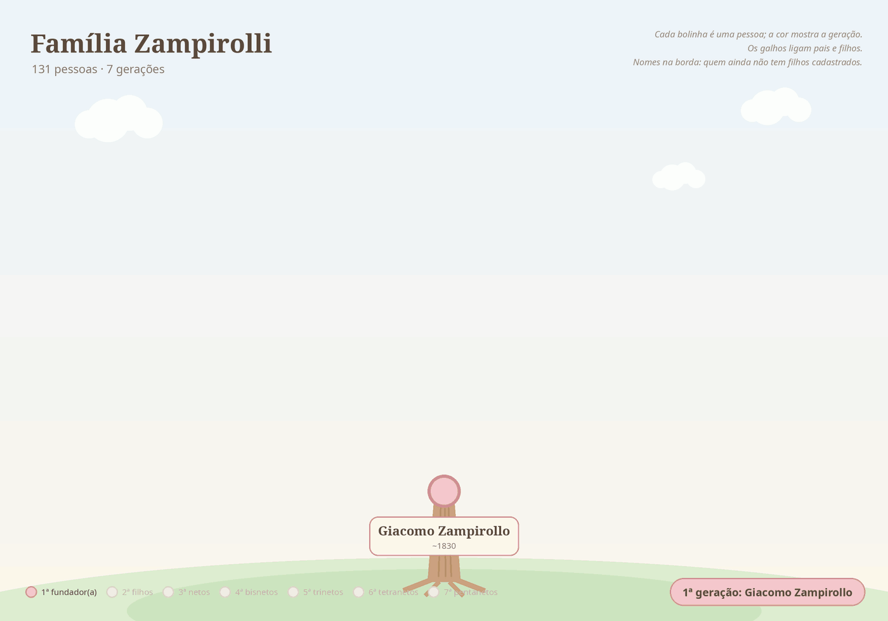

Giacomo Zampirollo
Giacomo Zampirollo e Luigia Maria Braggion, de Pettorazza Grimani (Rovigo), chegaram a Vitória (ES) no navio Adria em 31/12/1888 com filhos, noras e netos. No Brasil o sobrenome passou a ser escrito Zampirolli.
Ver na árvore interativa ✏️ Sugerir correção ➕ Acrescentar filho(a) 📷 Enviar foto ou documento
A árvore em movimento

Dados
- Nascimento
- ~ 1830
- Cônjuge
- Luigia Maria Braggio (Nascida ~1834 na província de Rovigo)
- Última residência na Itália
- Pettorazza Grimani
- Navio
- Adria
- Chegada ao Brasil
- 31/12/1888
Família
Filhos (5)
- Vincenzo ~1855⚭ Maria Franchin · 2 filhos
- Giovanni⚭ Gacintha Grassetto · 6 filhos
- Domenico ~18654 filhos
- Antonio ~1873
- Tereza Felicita 1878⚭ Giuseppe Valentim De Angeli · 7 filhos
Todos os descendentes (129)
Vincenzo ~1855 ⚭ Maria Franchin 2
Giovanni ⚭ Gacintha Grassetto 111
Jose ~1886 ⚭ Dosolina Dalfiôr 93
- Maria ~1912 †
- Luiz †
Domingos 1925 ⚭ Rosalina Ballarini 33
Lourdes 1951 ⚭ Wilton Gomes Costa Sobrinho 2
- Ilario 1952 †
- Luzia 1957 †
Braz 1958 ⚭ Helena Pereira 2
- Brunelly Pereira 1986
- Fabricio 1999
Fernando 1960 ⚭ Maria do Carmo Batista Zampirolli 2
- Filipe Batista 1987
- Alice Batista 1991
Joao Bosco 1962 ⚭ Lúcia neves gomes 2
- Igor Nevex 1987
- Ivan Neves 1992
Reinaldo 1964 ⚭ Alzira Rocha Dias 4
- Josiane Dias Neves 1987
- Natani 1994
- Alan Pablo Dias 1994
- Douglas Sennas Dias Galiasso 1997
Maria Salete 1965 ⚭ Carlos Alberto Diniz Aguiar 3
Francisco de Assis 1968 ⚭ Cristina Baptista Moura 2
Rosa ⚭ Aristides Basso 5
- Maria Regina ⚭ João Cipriano
- Amalia ⚭ Bortolo Partelli
- Antonio ~1873
Tereza Felicita 1878 ⚭ Giuseppe Valentim De Angeli 7
História
Fotos


Documentos
Contexto histórico
Informações sobre lugares e fatos citados acima, pesquisadas em fontes públicas na web. Não são dados pessoais desta pessoa.
Origem na Itália Pettorazza Grimani (Rovigo, Itália)
Comune da província de Rovigo, no Vêneto, cerca de 40 km a sudoeste de Veneza e 20 km a nordeste de Rovigo, a apenas 3 m de altitude. Faz divisa com Adria, Cavarzere e San Martino di Venezze — por isso é natural que registros da família citem ora Pettorazza, ora Cavarzere como última residência. Em 2010 tinha cerca de 1.700 habitantes.
Origem na Itália Cavarzere (Veneza, Itália)
Município do Vêneto a cerca de 35 km a sudoeste de Veneza, numa planície cortada por canais e atravessada pelo rio Ádige, perto da laguna veneziana. Sua origem remonta a um posto pré-romano ligado a Hatria (atual Adria). Passou da República de Veneza para a Áustria em 1797 e para o Reino da Itália em 1866. Nos documentos da família aparece grafado como "Carvazere".
Contexto histórico A grande emigração do Vêneto (1875–1914)
Entre 1876 e 1900 mais de cinco milhões de italianos deixaram o país; o Brasil esteve entre os principais destinos. No Vêneto, a principal causa foi a crise agrária provocada pela chegada de trigo barato das Américas e da Rússia, somada à pressão demográfica e à crise da pequena propriedade. Cerca de 1,4 milhão de italianos vieram ao Brasil em 50 anos, a partir de 1874.
Chegada ao Brasil Imigração italiana no Espírito Santo
A imigração italiana para o Espírito Santo começou em 17/02/1874, com a chegada do veleiro La Sofia ao porto de Vitória, trazendo 388 italianos. Entre o fim do século XIX e o início do XX chegaram ao estado cerca de 45 mil italianos, quase todos camponeses, muitos partindo de Gênova. O Arquivo Público do Estado (APEES) mantém o banco de dados "Imigrantes Espírito Santo", com dezenas de milhares de nomes, onde é possível pesquisar as listas de passageiros e pedir certidão de desembarque — útil para a cidadania italiana.
Chegada ao Brasil Porto de Benevente (atual Anchieta, ES)
O rio Benevente ligava as pequenas propriedades ao mar, e o porto era a principal saída de açúcar, cachaça e café da região. No fim do século XIX, Anchieta foi porta de entrada e moradia de centenas de imigrantes italianos. A vila foi elevada a cidade em 1887 e o município de Benevente passou a se chamar Anchieta em 1921 (as fontes divergem um pouco nas datas).
Chegada ao Brasil Hospedaria da Ilha das Flores (RJ)
Primeira hospedaria de imigrantes construída e administrada pelo governo central, criada em 1883 numa ilha da Baía de Guanabara (perto de São Gonçalo), em parte para isolar os recém-chegados da febre amarela que assolava a capital. Foi a principal porta de entrada de quem desembarcava no porto do Rio; estima-se que 700 mil pessoas passaram por ela até seu fechamento nos anos 1960. Desde 2010 abriga um Centro de Memória da Imigração (Marinha/UERJ).
Chegada ao Brasil Hospedaria de Imigrantes do Brás (SP)
Funcionou de 1887 a 1978 e recebeu mais de 2,5 milhões de pessoas de mais de 70 nacionalidades. O prédio abriga hoje o Museu da Imigração do Estado de São Paulo, cujo acervo digital (livros de registro de hóspedes, listas de bordo) pode ser pesquisado pelo nome do imigrante.
Pasta de origem: 01Giacomo/